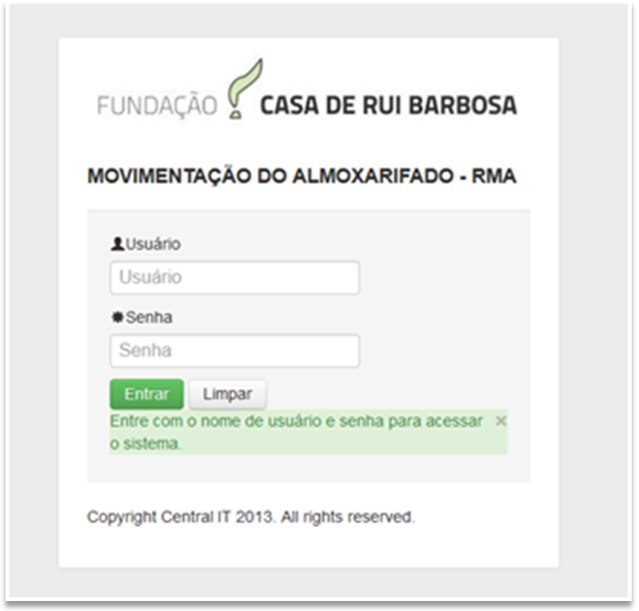

Sistema de Gerenciamento de estoques 1.0

As instruções a seguir são fornecidos para ajudá-lo a usar a máquina corretamente, bem como compreendertodos os recursos.
Antes de usar o sistema, leia o material e certifique-se de que o tenha compreendido
Created with the Personal Edition of HelpNDoc: Easily create CHM Help documents